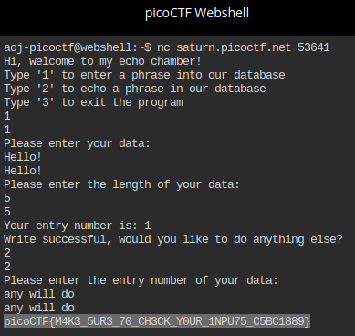

picoCTF: basic-file-exploit
This is my first writeup about a CTF challenge. The following was the first task in the 100’s (i.e. lowest) category of the 2022 picoCTF challenge:
https://play.picoctf.org/practice/challenge/252?page=1&search=basic-file-exploit
The task was described as follows:
Description:
The program provided allows you to write to a file and read what you wrote from it. Try playing around with it and see if you can break it! Connect to the program with netcat:
$ nc saturn.picoctf.net 53641
The program’s source code with the flag redacted can be downloaded here.
Hint:
Try passing in things the program doesn’t expect. Like a string instead of a number.
Solution:
You can see rather quickly that the sought flag was included in the original program code, specifically in line 15 of the source code:
static const char* flag = "[REDACTED]";
We can now simply search for the variable name flag in the rest of the source code to locate the part where we can break the code as indicated in the hint. There is just one more occurrence of flag in the program: in the function data_read(), line 144:
if ((entry_number = strtol(entry, NULL, 10)) == 0) {
puts(flag);
fseek(stdin, 0, SEEK_END);
exit(0);
}
Obviously, the flag is output with puts if the library function strtol returns 0. The function converts the string entry into a long integer with base 10. See the following link for details:
https://www.tutorialspoint.com/c_standard_library/c_function_strtol.htm
The function data_read() reads words back from the already entered words, therefore it seems plausible that we have to start the program (i.e. connect with nc), enter some data, and then chose the data reading function and enter a string () that converts into a 0 when run through strtol(). That can either be a non-numeric value (i.e. text) or the value 0 itself.
Let’s see if that plan works:
It does! We have found the flag:
picoCTF{M4K3_5UR3_70_CH3CK_YOUR_1NPU75_C5BC1889}
The same trick works, too, if you enter 0 instead of a text. Maybe you want to try that yourself.